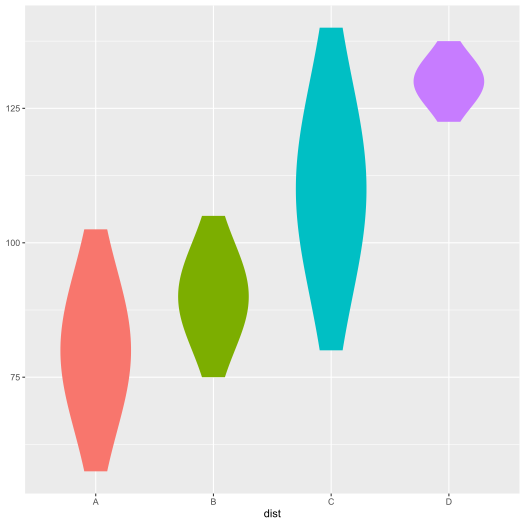

A ggplot2 extension for creating normal violin plots with specified means and standard deviations.
Installation
You can either install ggnormalviolin from CRAN or install the development version of ggnormalviolin from github.
Option 1: Install the most recent stable release from CRAN
You can install ggnormalviolin from CRAN by running this code:
install.packages("ggnormalviolin")Option 2: Install the development version from GitHub
To install the development version of ggnormalviolin, you need to check if devtools is installed. If not, run this:
install.packages("devtools")Once you are sure you have devtools installed, you can install the development version of ggnormalviolin from GitHub by running this code:
devtools::install_github("wjschne/ggnormalviolin")Using ggnormalviolin
Suppose there are 4 hypothetically normal distributions with specific means and standard deviations. They can be plotted like so:
library(ggplot2)
library(ggnormalviolin)
# Make data
d <- data.frame(
dist = c("A", "B", "C", "D"),
dist_mean = c(80, 90, 110, 130),
dist_sd = c(15, 10, 20, 5)
)
# Make base plot
p <- ggplot(data = d,
aes(x = dist,
mu = dist_mean,
sigma = dist_sd,
fill = dist)) +
theme(legend.position = "none")
# Add normal violins
p + geom_normalviolin()
Tail Highlighting
Suppose you want to highlight the two tails of the distributions. Set the p_tails to specify the total area of the tails. Thus, if p_tail = 0.05, each tail will represent the outermost 2.5% of the distributions (i.e, 0.05 = 2 &mult; 0.025).
p + geom_normalviolin(p_tail = 0.05)Suppose you want to highly only the upper tails. Set p_upper_tail to the proportion desired.
p + geom_normalviolin(p_upper_tail = 0.05)Analogously, you can highlight only the lower tails by setting the p_lower_tail parameter.
p + geom_normalviolin(p_lower_tail = 0.05)
The defaults for highlighting is accomplished by selecting a subset of the whole distribution, setting tail_fill to black, and then making the black fill transparent by setting tail_alpha = 0.4. Setting these values to other colors and levels of transparency can dramatically change the look of the plot.
p + geom_normalviolin(
p_tail = 0.05,
tail_fill = "white",
tail_alpha = 0.8,
color = "gray20",
size = 0.1
)
Direction of Violin
If you want to omit the left or right side of the violins, you can set the face_left or face_right parameters to FALSE.
p + geom_normalviolin(face_left = FALSE)
p + geom_normalviolin(
face_right = FALSE,
p_tail = 0.05)Violin Width
You can set the width of the violin to any size desired.
p + geom_normalviolin(width = 1)If you want the shape of the distribution to remain constant, map the width parameter to a multiple of the standard deviation.
p + geom_normalviolin(aes(width = dist_sd * 0.05))
Setting Limits
By default, the normal violins extend 4 standard deviations in both directions. Use the nsigma parameter to set a different value.
p + geom_normalviolin(nsigma = 1.5)
If you set limits on the y scale, it is possible that some of the violins will be distorted or cut in pieces.
p +
geom_normalviolin() +
ylim(50,140)
This occurs because data outside the limits is discarded, breaking up the polygons that compose the violins into smaller pieces. To prevent such behavior, set the upper_limit and lower_limit parameters equal to the same limits you have specified for the y scale (or any other values you wish).
p +
geom_normalviolin(lower_limit = 50, upper_limit = 140) +
ylim(50,140)Alternately, you can set the limits in ggplot2::coord_cartesian, which will zoom the plot instead of discarding the data.
p +
geom_normalviolin() +
coord_cartesian(ylim = c(50, 140)) Code of Conduct
Please note that the ggnormalviolin project is released with a Contributor Code of Conduct. By contributing to this project, you agree to abide by its terms.